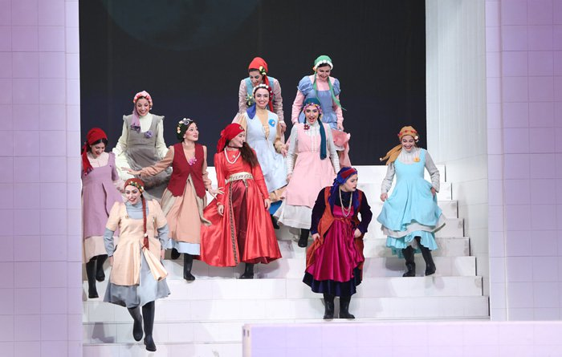

طراحی صحنه ویژه
در این نمایش ابداعاتی نوآورانه و خلاق پیشبینی شده، از جمله آنکه کفِ صحنه با آب پوشیده شده و یا از تمامیِ عمقِ قابلتوجهِ صحنهیِ تالار وحدت و امکاناتِ ماشینری استفاده میشود و طراحی صحنه، نور، صدا و لباس تصاویری چشمنواز، به یادماندنی و بدیع را در معرضِ دیدِ مخاطبان قرار میدهد.دکور این نمایش توسط دکتر علی رفیعی طراحی شده و یکی از ویژگی های آن وجود ۴۵۰۰ لیتر آب در صحنه و دکور طراحی شده است. مشاور طراحی و اجرای صحنه این نمایش بر عهده منوچهر شجاع بوده است.
